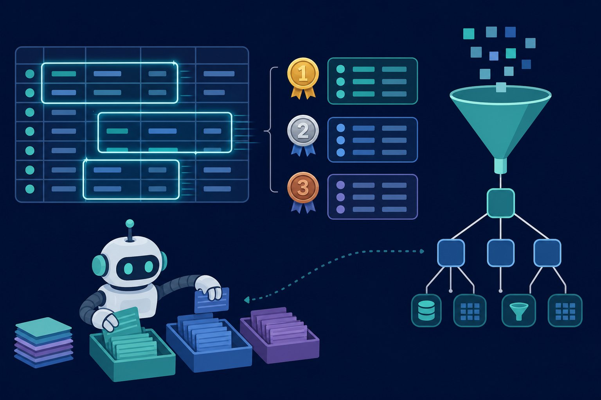

Advanced SQL — windows, CTEs, speed
Basic SQL gets you rows; advanced SQL gets you answers — running totals, rankings, session gaps, and queries that finish before lunch. Master window functions, CTEs, and the index intuition behind every fast dashboard you’ve ever admired.

Figure 71.1 — Window functions compute across rows without collapsing them. GROUP BY answers “how much”; windows answer “how much, and how does this row compare?”
1. Window functions (rank, run, compare)
-- rank refunds per city + running revenue (Postgres / BigQuery / DuckDB)
WITH monthly AS (
SELECT city,
date_trunc('month', ts) AS month,
SUM(amount) AS revenue
FROM refunds
GROUP BY 1, 2
)
SELECT city, month, revenue,
RANK() OVER (PARTITION BY city ORDER BY revenue DESC) AS rev_rank,
SUM(revenue) OVER (PARTITION BY city ORDER BY month
ROWS BETWEEN 2 PRECEDING AND CURRENT ROW) AS rolling_3mo,
LAG(revenue) OVER (PARTITION BY city ORDER BY month) AS prev_month
FROM monthly;2. CTEs — queries you can read (and debug)
| Pattern | Shape | When |
|---|---|---|
| Staged CTEs | raw → clean → agg → final | Every query over ~20 lines; debug one stage at a time |
| Recursive CTE | anchor UNION ALL step | Org charts, BOMs, referral chains, date spines |
| EXISTS / anti-join | WHERE NOT EXISTS (...) | “Customers with no orders” — beats LEFT JOIN + IS NULL |
| dbt models | SELECT-only .sql + tests | Analytics engineering: versioned, tested, documented SQL |
-- median session gap per user: LAG + filter, no self-join needed
WITH ordered AS (
SELECT user_id, ts,
LAG(ts) OVER (PARTITION BY user_id ORDER BY ts) AS prev_ts
FROM events
)
SELECT user_id,
percentile_cont(0.5) WITHIN GROUP (
ORDER BY EXTRACT(EPOCH FROM (ts - prev_ts))) AS median_gap_sec
FROM ordered
WHERE prev_ts IS NOT NULL
GROUP BY 1;3. Speed (read the plan, feed the index)
- EXPLAIN first:
EXPLAIN (ANALYZE, BUFFERS)shows seq scans, sort spills, and nested loops — optimise the fattest node, not the prettiest query. - Index the access path: equality + range + join keys and PARTITION/ORDER columns. Unindexed window sorts on 100M rows are how dashboards go to die.
- Filter early, aggregate late: push WHERE into CTEs; pre-aggregate before joining fanout tables (Ch 33).
- Right tool: DuckDB/Polars for local 10GB analytics, warehouse for shared truth, Postgres for the app — one engine rarely serves all three (Ch 72).
Correctness traps
RANK vs DENSE_RANK vs ROW_NUMBER differ on ties — pick deliberately. ROWS vs RANGE frames diverge with duplicate ORDER values. Time zones: store UTC, convert at display, never mix. And NULLS FIRST/LAST varies by engine — specify it or inherit surprises.
Short notes
Windows: PARTITION + ORDER + FRAME for ranks, running totals, LAG/LEAD lookups. CTEs stage logic (raw → clean → agg → final); recursive for hierarchies; dbt for versioned analytics. Speed: EXPLAIN the plan, index access paths, filter early, pre-aggregate before fanout joins. Mind ties, frames, time zones, NULL ordering.
Point notes
- PARTITION · ORDER · FRAME.
- CTEs stage, don’t nest.
- LAG beats self-joins.
- EXPLAIN, then index.
- Ties, frames, TZ, NULLs.
MCQs
5 questions1. Window functions differ from GROUP BY in that they:
2. LAG(revenue) OVER (PARTITION BY city ORDER BY month) returns:
3. RANK() vs ROW_NUMBER() on tied values:
4. First step when a dashboard query is slow:
5. dbt brings to analytics SQL:
Practice questions
P1. Top-3 refunds per city per month, with rank gaps visible. Write it and explain the function choice.
RANK() OVER (PARTITION BY city, month ORDER BY amount DESC) then filter rnk <= 3. RANK (not ROW_NUMBER) so tied amounts share a rank and the skip (1,1,3) stays visible — finance sees the tie instead of an arbitrary cut. DENSE_RANK if they want exactly 3 distinct levels. Index on (city, month, amount DESC) keeps the sort cheap.
P2. EXPLAIN shows a sequential scan + external sort on 200M rows. Give the 4-step fix order.
(1) Add/verify index on filter + join + ORDER columns (turn seq scan → index scan, sort → presorted). (2) Push filters into the earliest CTE; pre-aggregate before any fanout join. (3) Select only needed columns (avoid SELECT * past wide rows). (4) If still slow: partition by date, materialise the aggregate, or move the slice to the warehouse/DuckDB. Re-run EXPLAIN after each step — one change, one measurement.
P3. Convert a 60-line nested-subquery report into dbt-style staged CTEs. What do you gain?
Stages: base (filters) → clean (casts, TZ, dedup) → agg (windows) → final (select + order). Gains: each stage runs standalone for debugging; tests attach per stage (unique, not_null, accepted_values); docs live with the model; git diffs review cleanly; refactors (one stage at a time) stop breaking the whole report. The query gets longer and simultaneously easier.